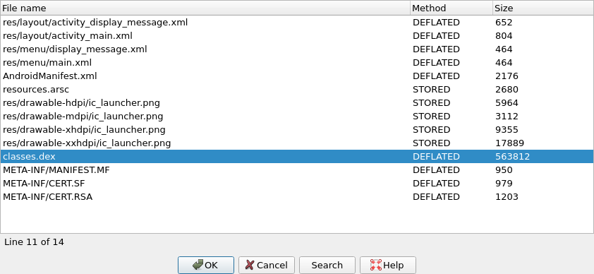
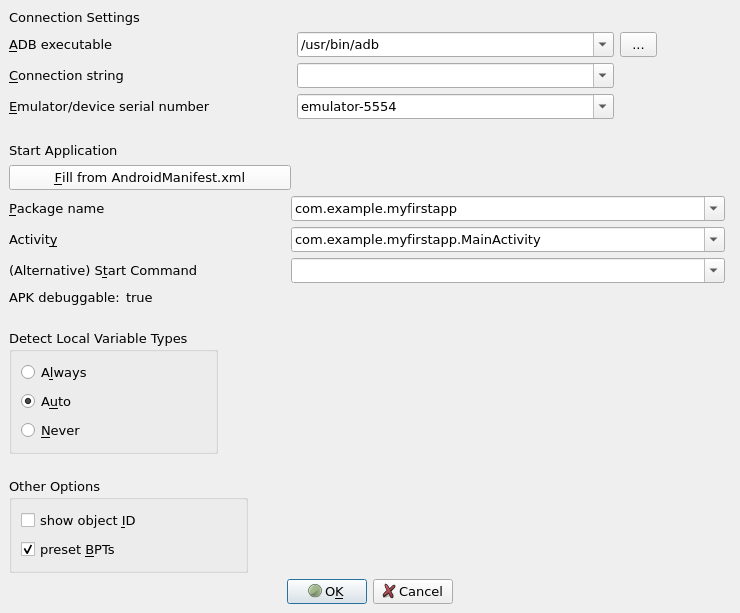
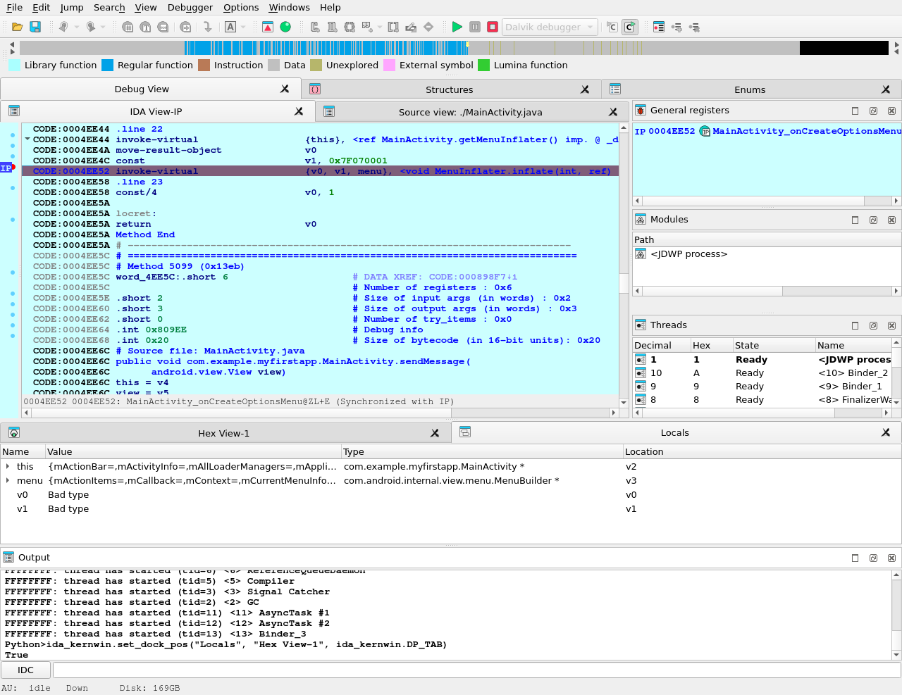
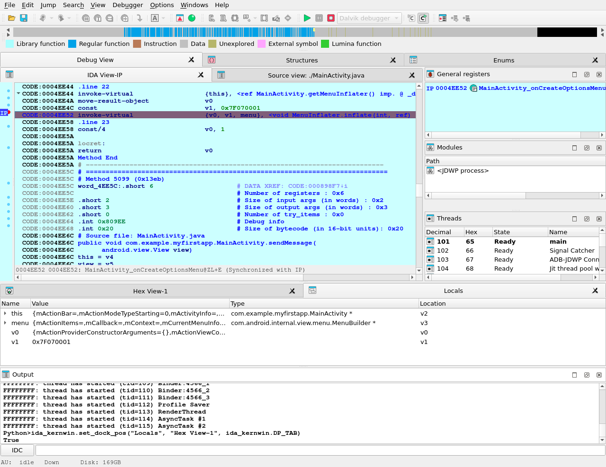
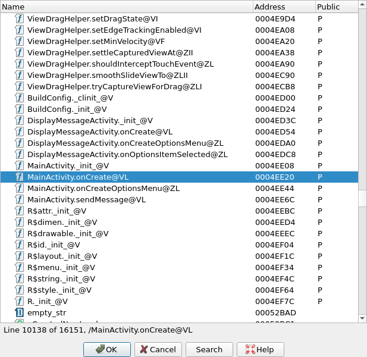
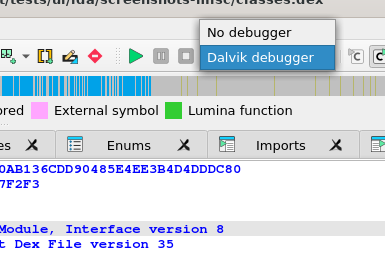
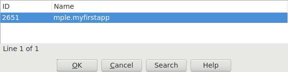
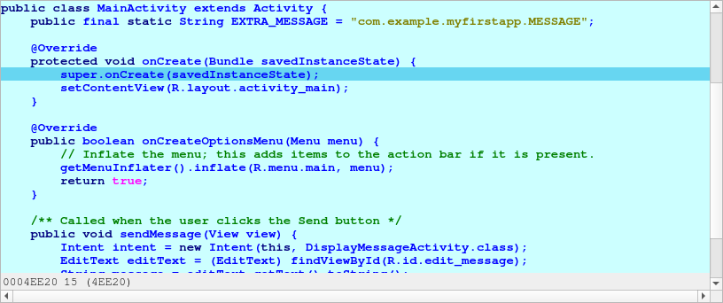
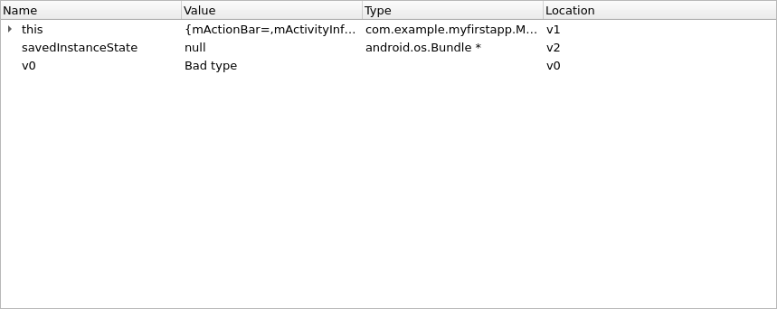
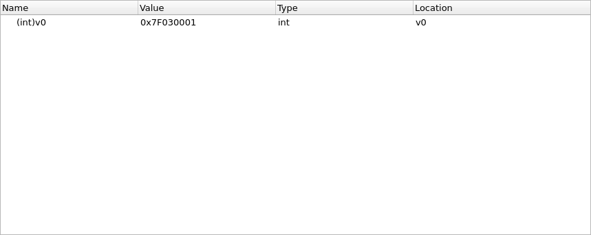

Debugging Dalvik Programs
Last updated on September 27, 2023 — v0.3
Preface
Starting with version 6.6, IDA Pro can debug Android applications written for the Dalvik Virtual Machine. This includes source level debugging too. This tutorial explains how to set up and start a Dalvik debugging session.
Installing Android Studio
First of all we have to install the Android SDK from the official site Android Studio.
Environment Variables
IDA needs to know where the adb utility resides, and tries various methods to locate it automatically. Usually IDA finds the path to adb, but if it fails then we can define the ANDROID_SDK_HOME or the ANDROID_HOME environment variable to point to the directory where the Android SDK is installed to.
Android Device
Start the Android Emulator or connect to the Android device.
Information about preparing a physical device for development can be found at Using Hardware Devices.
Check that the device can be correctly detected by adb:
$ adb devices
List of devices attached
emulator-5554 device
Installing the App
IDA assumes that the debugged application is already installed on the Android emulator/device.
Please download:
{% file src=“MyFirstApp.apk.zip” %}
and
{% file src=“MyFirstApp.src.zip” %}
from our site. We will use this application in the tutorial.
We will use adb to install the application:
$ adb -s emulator-5554 install MyFirstApp.apk
Loading Application into IDA
IDA can handle both .apk app bundles, or just the contained .dex files storing the app’s bytecode. If we specify an .apk file, IDA can either extract one of the contained .dex files by loading it with the ZIP load option, or load all classes*.dex files when using the APK loader.

Dalvik Debugger Options
The main configuration of the dalvik debugger happens resides in “Debugger > Debugger Options > Set specific options”:

Connection Settings
ADB executable
As mentioned above IDA tries to locate the adb utility. If IDA failed to find it then we can set the path to adb here.
Connection string
Specifies the argument to the adb connect command. It is either empty (to let adb figure out a meaningful target) or a <host>[:<port>] combination to connect to a remote device somewhere on the network.
Emulator/device serial number
Serial number of an emulator or a device. Passed to adb``'s -s option. This option is useful if there are multiple potential target devices running. For the official Android emulator, it is typically emulator-5554.
Start Application
Fill from AndroidManifest.xml
Press button and point IDA to either the APK or the AndroidManifest.xml file of the mobile app. IDA then automatically fetches the package name and application start activity, as well as the debuggable flag from the specified file.
Package Name
Package name containing the activity to be launched by the debugger.
Activity
Start activity to be launched by the debugger.
Alternative Start Command
Usually IDA builds the start command from the package and activity name and launches the APK from the command line as follows:
am start -D -n '<package>/<activity>' -a android.intent.action.MAIN -c android.intent.category.LAUNCHER
If that does not match your desired debugging setup, you can enter an alternative start command here. Note that you have to provide package and activity as part of the startup command.
APK Debuggable
The value of the debuggable flag, as extracted from the AndroidManifest.xml or the APK. APKs that do not have the debuggable flag set (most do not) cannot be started on unpatched phones. Hence, while this value is false, IDA will display a (silencable) warning when starting a debugging session. To produce a debuggable APK that has the flag set to true, please revert to third-party tooling.
Detect Local Variable Types
This controls the behavior of IDA’s type guessing engine. “Always” and “Never” are pretty self-explanatory: The options force-enable or force-disable type guessing. “Auto” means that type guessing is disabled for Android APIs < 28 and enabled on APIs >= 28. If you work with very old (i.e. API 23 and lower) Android devices and experience crashes during debugging, set this option to “Never”. Note that when type guessing is disabled, IDA automatically assumes int for unknown variable types, which causes warnings on API 30 and above.
Local Variables with Type Guessing Deactivated

Local Variables with Type Guessing Activated

Other Options
Show object ID
If active, IDA shows the object ID assigned by the Java VM for composite (non-trivial) types in the local variables window.
Preset BPTs
If active, IDA sets breakpoints at the beginning of all (non-synthetic, non-empty) methods of the start activity class specified in the Activity field above.
Path to Sources
To use source-level debugging we have to set paths to the application source files. We can do it using the “Options > Sources path” menu item.
Our Dalvik debugger presumes that the application sources reside in the current (“.”) directory. If this is not the case, we can map current directory (“.”) to the directory where the source files are located.
Let us place the source files DisplayMessageActivity.java and MainActivity.java in the same directory as the MyFirstApp.apk package. This way we do not need any mapping.
Setting Breakpoints
Before launching the application it is reasonable to set a few breakpoints. We can rely on the decision made by IDA (see above the presetBPTs option) or set breakpoints ourselves. A good candidate is the onCreate method of the application’s main activity.
We can use the activity name and the method name onCreate to set a breakpoint:

Naturally, we can set any other breakpoints any time. For example, we can do it later, when we suspend the application.
Starting the Debugger
At last we can start the debugger. Check that the Dalvik debugger backend is selected. Usually it should be done automatically by IDA:

If the debugger backend is correct, we are ready to start a debugger session. There are two ways to do it:
- Launch a new copy of the application (Start process)
- Attach to a running process (Attach to process)
Launching the App
To start a new copy of the application just press <F9> or use the “Debugger > Start process” menu item. The Dalvik debugger will launch the application, wait until application is ready and open a debugger session to it.
We may wait for the execution to reach a breakpoint or press the “Cancel” button to suspend the application.
In our case let us wait until execution reach of onCreate method breakpoint.
Attaching to a Running App
Instead of launching a new process we could attach to a running process and debug it. For that we could have selected the “Debugger > Attach to process…” menu item. IDA will display a list of active processes.

We just select the process we want to attach to.
Particularities of Dalvik Debugger
All traditional debug actions like Step into, Step over, Run until return and others can be used. If the application sources are accessible then IDA will automatically switch to the source-level debugging.
Below is the list of special things about our Dalvik debugger:
- In Dalvik there is no stack and there is no
SPregister. The only available register isIP. - The method frame registers and slots (
v0,v1, …) are represented as local variables in IDA. We can see them in the “Debugger > Debugger Windows > Locals” window (see below) - The stack trace is available from “Debugger > Debugger windows > Stack trace” (the hot key is <Ctrl-Alt-S>).
- When the application is running, it may execute some system code. If we break the execution by clicking on the “Cancel” button, quite often we may find ourselves outside of the application, in the system code. The value of the
IPregister is0xFFFFFFFFin this case, and stack trace shows only system calls and a lot of0xFFFFFFFF. It means that IDA could not locate the current execution position inside the application. We recommend to set more breakpoints inside the application, resume the execution and interact with application by clicking on its windows, selecting menu items, etc. The same thing can occur when we step out the application. - Use “Run until return” command to return to the source-level debugging if you occasionally step into a method and the value of the
IPregister becomes0xFFFFFFFF.
Locals Window
IDA considers the method frame registers, slots, and variables (v0, v1, …) as local variables. To see their values we have to open the “Locals” window from the “Debugger > Debugger windows > Locals” menu item.
At the moment the debugger stopped the execution at the breakpoint which we set on onCreate method.

Perform “Step over” action (the hot key is <F8>) two times and open the “Locals” window, we will see something like the following:

If information about the frame is available (the symbol table is intact) or type guessing is enabled then IDA shows the method arguments, the method local variables with names and other non-named variables. Otherwise some variable values will not be displayed because IDA does not know their types.
Variables without type information are marked with “Bad type” in the “Locals” window. To see the variable value in this case please use the “Watch view” window and query them with an explicit type (see below).
Watch View Window
To open the “Watch view” window select the “Debugger > Debugger windows > Watch view” menu item. In this window we can add any variable to watch its value.

note that we have to specify type of variable if it is not known. Use C-style casts:
(Object*)v0(String)v6(char*)v17(int)v7
We do not need to specify the real type of an object variable, the “(Object*)” cast is enough. IDA can derive the real object type itself.
Attention! On Android API versions 23 and below an incorrect type may cause the Dalvik VM to crash. There is not much we can do about it. Our recommendation is to never cast an integer variable to an object type, the Dalvik VM usually crashes if we do that. But the integer cast “(int)” is safe in practice.
Keeping the above in the mind, do not leave the cast entries in the “Watch view” window for a long time. Delete them before any executing instruction that may change the type of the watched variable.
Overall we recommend to debug on a device that runs at least Android API 24.
Troubleshooting
- Check the path to
adbin the “Debugger specific options” - Check the package and activity names
- Check that the emulator is working and was registered as an
adbdevice. Try to restart theadbdaemon. - Check that the application was successfully installed on the emulator/device
- Check the output window of IDA for any errors or warnings
- Turn on more debug print in IDA with the
-z50000command line switch. - Android APIs 24 and 25 are known to return wrong instruction sizes during single stepping. Try migrating to a different Android API if you have trouble with single steps.
- IDA exposes a subset of the JDWP specification as IDC commands. (Usually the name from the specification prefixed with
JDWP_). - Android APIs 23 and below crash if type guessing is enabled. Remedy this by setting the
Detect Local Variable Typesoption toNeveror migrate to a newer Android API.